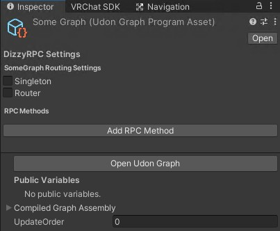
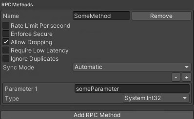
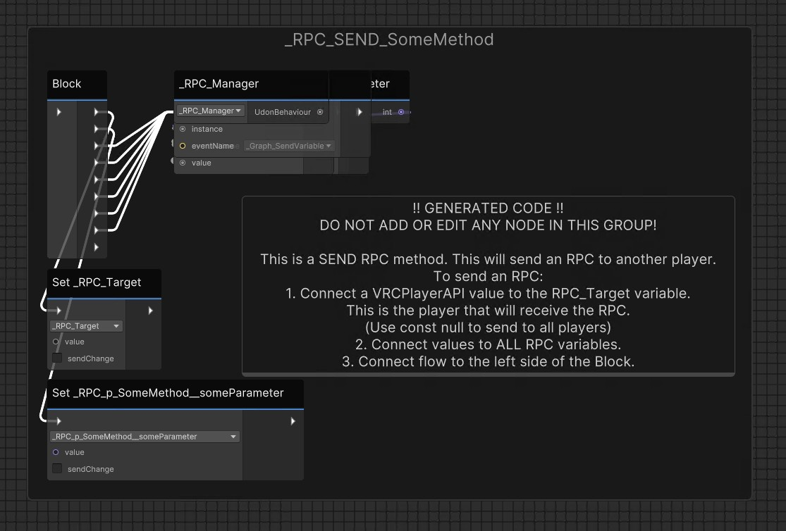
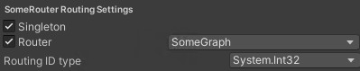
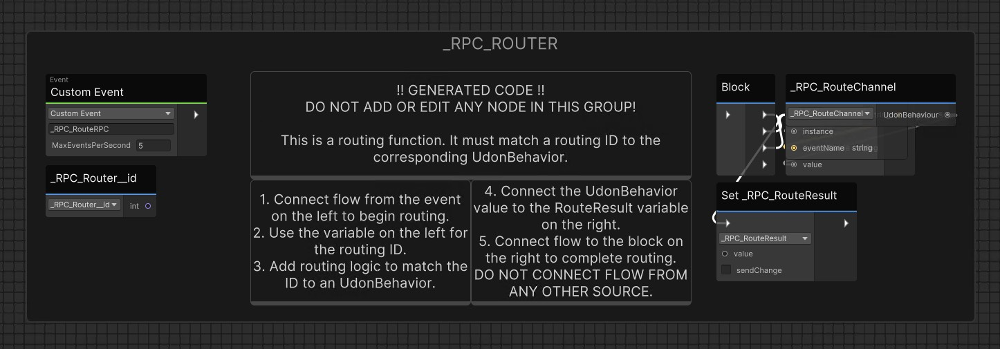
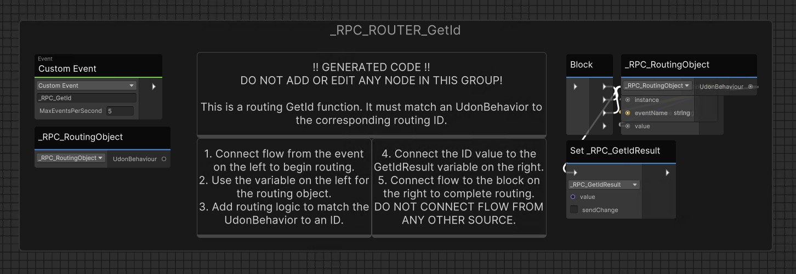
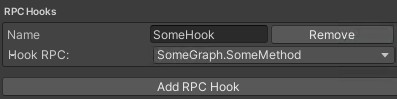
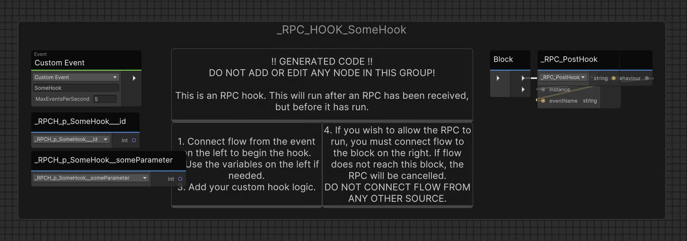

Udon networking in VRChat leaves a lot to be desired, especially for Games. VRChat enforces very strict limits on network bandwidth, while being incredibly wasteful if you are not careful.
In Udon, there are two ways to send data from one client to another: Network events and Synced variables.
Network events are easy to use, but are heavily limited. There's a global limit of 100 events per second in the entire world. Additionally, network events are only processed every second, meaning they suffer from up to a second of random latency, even in ideal conditions.
Synced variables do not have these problems, but they are not designed to be used like events, and have some quirks that must be handled properly if you choose to do so.
DizzyRPC aims to combine the best of both worlds, while making them both easier to use than events, and offering some additional functionality as well.
Using DizzyRPC
DizzyRPC is designed to be very easy to use in U#, similarly to an event. To create an RPC method is as simple as this:
[RPCMethod]
public void _SomeMethod(){
// do something incredibly awesome
}
And to call it from another client is as simple as this:
_SendRPC_SomeMethod(null); // 'null' here means send to all players
This will run _SomeMethod() on the same object for all other players. You can add as many parameters to the method as you want.
But you may be asking: Hey, what is this _Send_SomeMethod? Where did it come from? Well, I'm so glad you asked.
DizzyRPC does this through code generation. In this example, the following code was generated at the bottom of the file:
#region Generated RPCs (DO NOT EDIT)
[UnityEngine.SerializeField] private DizzyRPC.RPCManager _rpc_manager;
public void _SendRPC_SomeMethod(VRC.SDKBase.VRCPlayerApi target) {
_rpc_manager._SendVariable(target, DizzyRPC.RPCChannel.RPC_Example__SomeMethod, false);
}
#endregion
This automatically handles all internal references to DizzyRPC, so you don't have to worry about it. The _rpc_manager field is also automatically set in Unity, thanks to VRRefAssist.
There's just one problem: How does DizzyRPC run this on the same object for another player?
Routing
For an RPC to be sent to the same object, that object has to be uniquely identified for both players. With traditional Udon networking, this is done automatically via Network IDs. However, this only works with objects that exist in the editor at build time. This means that all objects instantiated at runtime cannot be networked.
DizzyRPC solves this by routing ALL messages through a Player Object, since player objects are guaranteed to exist for all players. For DizzyRPC to know where to send an RPC, each script containing an [RPCMethod] must be uniquely identified. There are a couple ways to do this:
Singletons
A singleton is an object that exists once, and only once. This could be any object that exists in the world when it is built, and thus exists for all players. If your script is on a Singleton, this is what you need:
using VRRefAssist;
[Singleton]
public class SomeScript : UdonSharpBehavior {
// something incredibly awesome
}
That's it! As long as you only have one instance of this script, DizzyRPC will route all of its RPCs with no issue.
But what about things that aren't singletons, like items spawned dynamically at runtime? That's where you use a Router.
Routers
A router is a singleton that uniquely identifies other objects so that they may hold RPCs. This should generally be attached to an object pool, to route RPCs to and from objects within that pool.
using DizzyRPC;
using VRRefAssist;
[Singleton]
public class SomeRouter : RPCRouter<SomeRoutedScript, int>
{
public override SomeRoutedScript _Route(int id)
{
// Return the SomeRoutedScript that corresponds to `id`
}
public override int _GetId(SomeRoutedScript routedObject)
{
// Return the ID that corresponds to `routedObject`
}
}
A router is defined with two things: The script that it should route RPCs for, and the type of ID that should be used to route it. So in this example, RPCRouter<SomeRoutedScript, int> means that this routes to SomeRoutedScript using an int for the ID. (You can use any VRC-serializable type for an ID)
A router must override the above methods to convert the script object to an ID, and convert an ID back to the script object. DizzyRPC handles the rest.
Hooks
RPC Hooks allow you to monitor any RPC from another script, and even reject incoming RPCs. RPC Hooks can be defined in any Singleton, and are run after an RPC is received, but before the RPC is run.
[RPCHook(typeof(SomeScript), nameof(SomeScript._SomeMethod))]
public bool _SomeHook()
{
// some awesome monitoring
}
Hooks may also reference any variable from the RPC, using a parameter with the same name and type. The routing ID from a routed RPC may be referenced with a parameter named _id.
Hooks must return true to allow the RPC to run. If false is returned, the RPC will be discarded. This can be used to check & validate incoming RPCs.
RPC Customization
DizzyRPC supports sending RPCs via either Events, or via Variables. This can be specified using the parameters of the RPCMethod attribute. (It will default to Variable if not specified)
[RPCMethod(
enforceSecure: false,
allowDropping: true,
requireLowLatency: false,
ignoreDuplicates: false,
mode:RPCSyncMode.Automatic)]
Customizing any of these values may force the RPC to be an event or a variable, or this can be specified using mode. All values shown above are the defaults, here's what each one does:
enforceSecure - This specifies that this RPC must only be transmitted to the target client. This will enforce RPCSyncMode.Event (Synced variables are always sent to all players)
allowDropping - This allows RPCs to be dropped if the network clogs up. If set to false, this will enforce RPCSyncMode.Event
requireLowLatency - This specifies that this RPC must always be transmitted with minimal delay. This will enforce RPCSyncMode.Variable
ignoreDuplicates - This method ensures that the same RPC will not be sent twice in the same sync. This is only applicable to variables, so this will enforce RPCSyncMode.Variable
mode - This can be used to manually specify what mode an RPC should use, rather than choosing by intent.
DizzyRPC in the Unity Editor
All DizzyRPC functions can be accessed under Tools > DizzyRPC. Here's what they do:
Compile RPCs
This runs the code generation to make the RPCs function and generate the aforementioned _SendRPC methods. There are three options under this section:
Compile for Build - This compiles all RPCs with full functionality. This must be done before building for DizzyRPC to function.
Compile for Editor - This compiles RPCs in a minimal state with no functionality. This helps avoid compiler errors while modifying code. This must be done before editing any RPC method to avoid errors in generated code. If you do cause errors in generated code, contents of the Generated RPCs (DO NOT EDIT) section can be deleted to eliminate the errors, then re-generated by compiling RPCs again.
Remove all generated Code - This removes ALL generated code from your files. This WILL cause compiler errors if you are using any RPC methods. This is intended for if you want to remove DizzyRPC from a project.
Settings
DizzyRPC has a few settings to automatically compile RPCs, so you don't have to do it manually:
Auto Recompile RPCs in Editor - This will automatically recompile RPCs in Editor mode any time changes are made. Be careful with this, as most code editors will not automatically reload the file when the code is changed externally. (This setting is turned OFF by default)
Auto Recompile RPCs for Play Mode - This will automatically recompile RPCs in Build mode when you enter play mode, and back to Editor mode when you exit play mode. (This setting is turned ON by default)
Auto recompile RPCs on Build - This will automatically recompile RPCs in Build mode when you start a build. (This setting is turned ON by default)
Udon Graph
Oh, I almost forgot! That's right, DizzyRPC fully supports Udon Graph. (Including code generation)
When selecting an Udon Graph Program Asset, DizzyRPC will appear in the inspector above the normal Udon Graph section:
This allows you to configure all the same settings that can be done for RPCs in U#. This includes:
Methods
RPC Methods in Udon Graph must be defined in the inspector:

Once the RPCs are compiled, the following sections will be generated in the Udon Graph:
(All udon graph generated code includes instructions on how to use it, so I won't detail that here)

_RPC_ sections will always be placed on the far-left edge of the graph, and _RPC_SEND_ sections will always be placed on the far-right edge of the graph. Only the specified nodes may be connected to in the specified ways. Any other connections will be lost when RPCs are compiled.
Routers
Routers in Udon Graph are also defined in the inspector:
And the following graph sections are generated for a Router:

Routers will always be placed on the bottom edge of the graph. Code should be placed above them.
Hooks
RPC Hooks in Udon Graph are also defined in the inspector:
And the following graph section is generated for each RPC Hook:
RPC Hooks will always be placed on the bottom edge of the graph. Code should be placed above them.
Interfacing between U# and Udon Graph
Oh, did I mention? You can make routers or hooks for U# or Udon Graph, from either U# or Udon Graph.
For Udon Graph, there is no notable difference. All available RPCs will be selectable in the inspector, whether U# or Udon Graph.
For an U# Router to route RPCs for an Udon Graph program, the router looks a little different:
using DizzyRPC;
using DizzyRPC.Attribute;
using VRC.Udon;
using VRRefAssist;
[RPCGraphRouter("SomeGraph")]
[Singleton]
public class SharpRpcGraphRouter : RPCRouter<int>
{
public override UdonBehaviour _Route(int id)
{
// Return the UdonBehavior that corresponds to `id`
}
public override int _GetId(UdonBehaviour routedObject)
{
// Return the ID that corresponds to `routedObject`
}
}
Here, the program to route is specified in the [RPCGraphRouter] attribute, and the routed object type is always UdonBehavior. The router otherwise works the same way.
For an U# RPC Hook to hook into an Udon Graph RPC, this also requires special handling:
[RPCHook("SomeGraph", "SomeMethod")]
public bool _SomeHook()
{
// some awesome graph monitoring
}
Rather than using the behavior Type in the [RPCHook] attribute, pass in the name of the Udon Graph program. Otherwise, the hook works the same.
License & Downloads
DizzyRPC is licensed under the MPL v2.0. This means you can use it freely in any project, provided that you:
- List DizzyRPC in the credits section of your world.
- Make all changes to the DizzyRPC source files available under the same or compatible license.
This is not legal advice. See full license terms at https://www.mozilla.org/en-US/MPL/2.0/
DizzyRPC can be downloaded from GitHub
Thanks for reading! I hope you find it useful.